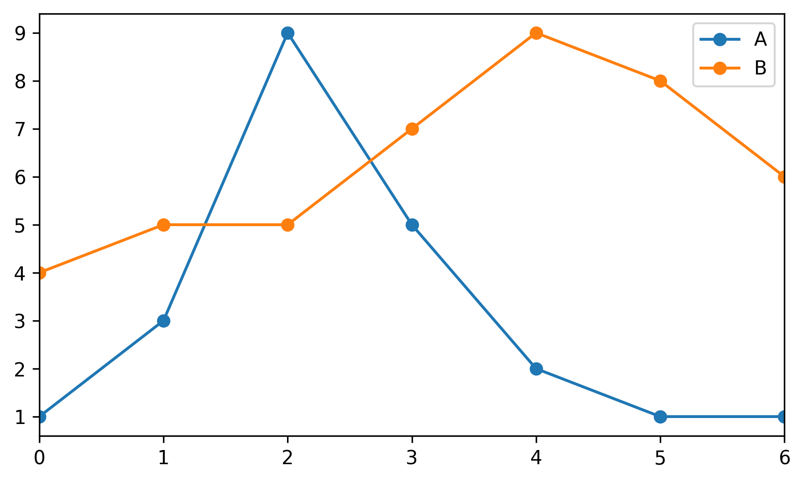
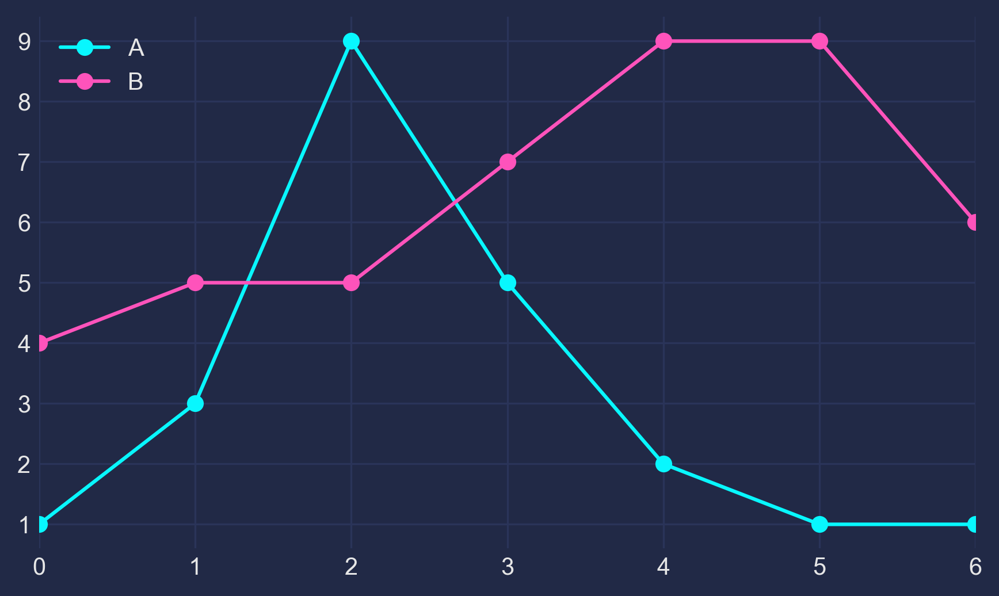

Matplotlib Cyberpunk Style
Posted

1 - The Basis
Let's make up some numbers, put them in a Pandas dataframe and plot them:
import pandas as pd
import matplotlib.pyplot as plt
df = pd.DataFrame({'A': [1, 3, 9, 5, 2, 1, 1],
'B': [4, 5, 5, 7, 9, 8, 6]})
df.plot(marker='o')
plt.show()

2 - The Darkness
Not bad, but somewhat ordinary. Let's customize it by using Seaborn's dark style, as well as changing background and font colors:
plt.style.use("seaborn-dark")
for param in ['figure.facecolor', 'axes.facecolor', 'savefig.facecolor']:
plt.rcParams[param] = '#212946' # bluish dark grey
for param in ['text.color', 'axes.labelcolor', 'xtick.color', 'ytick.color']:
plt.rcParams[param] = '0.9' # very light grey
ax.grid(color='#2A3459') # bluish dark grey, but slightly lighter than background

3 - The Light
It looks more interesting now, but we need our colors to shine more against the dark background:
fig, ax = plt.subplots()
colors = [
'#08F7FE', # teal/cyan
'#FE53BB', # pink
'#F5D300', # yellow
'#00ff41', # matrix green
]
df.plot(marker='o', ax=ax, color=colors)

4 - The Glow
Now, how to get that neon look? To make it shine, we redraw the lines multiple times, with low alpha value and slighty increasing linewidth. The overlap creates the glow effect.
n_lines = 10
diff_linewidth = 1.05
alpha_value = 0.03
for n in range(1, n_lines+1):
df.plot(marker='o',
linewidth=2+(diff_linewidth*n),
alpha=alpha_value,
legend=False,
ax=ax,
color=colors)

5 - The Finish
For some more fine tuning, we color the area below the line (via ax.fill_between) and adjust the axis limits.
Here's the full code:
import pandas as pd
import matplotlib.pyplot as plt
plt.style.use("dark_background")
for param in ['text.color', 'axes.labelcolor', 'xtick.color', 'ytick.color']:
plt.rcParams[param] = '0.9' # very light grey
for param in ['figure.facecolor', 'axes.facecolor', 'savefig.facecolor']:
plt.rcParams[param] = '#212946' # bluish dark grey
colors = [
'#08F7FE', # teal/cyan
'#FE53BB', # pink
'#F5D300', # yellow
'#00ff41', # matrix green
]
df = pd.DataFrame({'A': [1, 3, 9, 5, 2, 1, 1],
'B': [4, 5, 5, 7, 9, 8, 6]})
fig, ax = plt.subplots()
df.plot(marker='o', color=colors, ax=ax)
# Redraw the data with low alpha and slighty increased linewidth:
n_shades = 10
diff_linewidth = 1.05
alpha_value = 0.3 / n_shades
for n in range(1, n_shades+1):
df.plot(marker='o',
linewidth=2+(diff_linewidth*n),
alpha=alpha_value,
legend=False,
ax=ax,
color=colors)
# Color the areas below the lines:
for column, color in zip(df, colors):
ax.fill_between(x=df.index,
y1=df[column].values,
y2=[0] * len(df),
color=color,
alpha=0.1)
ax.grid(color='#2A3459')
ax.set_xlim([ax.get_xlim()[0] - 0.2, ax.get_xlim()[1] + 0.2]) # to not have the markers cut off
ax.set_ylim(0)
plt.show()
If this helps you or if you have constructive criticism, I'd be happy to hear about it! Please contact me via here or here. Thanks!